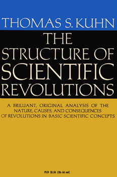
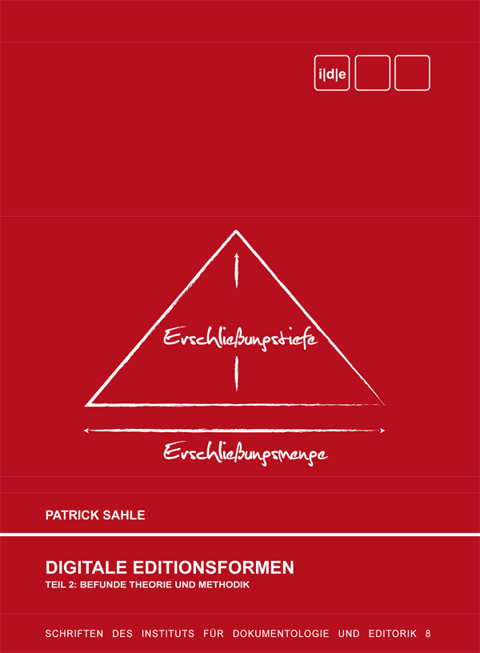
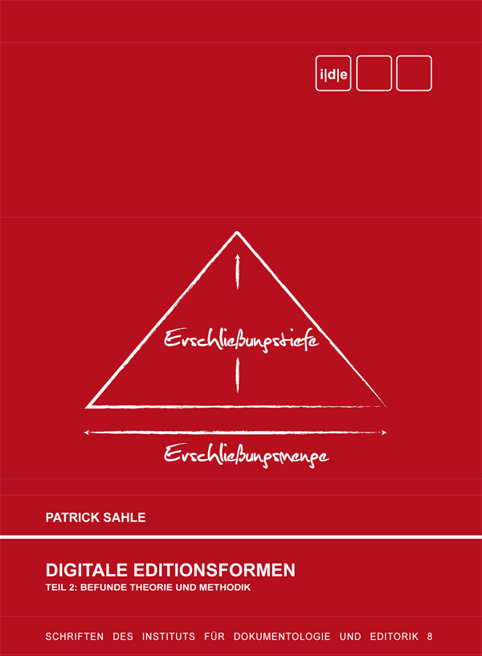

Formation doctorale interdisciplinaire
Elena Spadini (Université de Lausanne)
Presentation online at: small.cat/dad
Table of contents
Changement de paradigme ?
Éditions numériques
Definitions
Exemples
Outils
Definitions
Exemples
Conclusions
1. Changement de paradigme ?
Paradigm shift?

Quels problèmes et quelles solutions
Each [of the scientific revolutions] produced a consequent shift in the problems available for scientific scrutiny and in the standards by which the profession determined what should count as an admissible problem or as a legitimate problem-solution
paradigms [...] I take to be universally recognized scientific achievements that for a time provide model problems and solutions to a community of practitioners.
Kuhn 1962
Communauté et pratiques scientifiques
The study of paradigms [...] is what mainly prepares the student for membership in the particular scientific community with which he will later practice.
if I am right that each scientific revolution alters the historical perspective of the community that experiences it, then that change of perspective should affect the structure of postrevolutionary textbooks and research publications
Kuhn 1962
Technologies
The existence of the paradigm sets the problem to be solved; often the paradigm theory is implicated directly in the design of apparatus able to solve the problem.
The resulting pool of facts [from early fact-gathering] contains those accessible to casual observation and experiment together with some of the more esoteric data retrievable from established crafts like medicine, calendar making, and metallurgy. Because the crafts are one readily accessible source of facts that could not have been casually discovered, technology has often played a vital role in the emergence of new sciences.
Kuhn 1962
Échiquier
Rivoluzione è un termine piuttosto generico, che usiamo con una certa spensieratezza. [...] In ogni caso vuol dire che qualcuno, invece di inventarsi una buona mossa, ha modificato la scacchiera: si chiama cambio di paradigma.
Baricco 2018: 27 (merci @mr56k)
2. Éditions scientifiques numériques
Definitions
Édition scientifique
Scholarly edition
Une édition critique a pour but d'établir un texte fiable, en suivant des principes explicités. Elle rend compte de la transmission d'une œuvre et/ou de sa genèse, et des circonstances de sa rédaction. L'édition critique est généralement commentée grâce à des notes, des introductions, etc.
Édition scientifique numérique
Scholarly Digital Edition
Une édition numérique ne peut pas être convertie dans une édition papier sans une perte substantielle de contenu ou de fonctionnalité
Digital scholarly editions are not just scholarly editions in digital media: digital ≠ digitized
"Wiedergabe ohne Erschließung ist keine Edition. Eine bloße Reproduktion, ein einfaches Faksimile, eine digitale Bibliothek ist keine Edition"
"Deshalb kann eine digitale Edition nicht einfach die digitale Fassung einer auch im Druck realisierbaren Edition sein – zu ihrem Wesen gehört, dass sie über die Beschränkungen der typografischen Edition hinweggeht"
(Sahle 2016/2: 141-142; 149)
A digital edition can not be printed without a loss of information and/or functionality
"Eine digitale Edition ist dadurch bestimmt, dass sie nicht ohne wesentliche Informations- und Funktionsverluste in eine typografi sche Form gebracht werden kann – und in diesem Sinne über die druckbare Edition hinausgeht."
digital archive | edition | project | thematic research collection
Price 2009
copy-text | bedierisme | neo-lachmannian school | genetic criticism | filologia d'autore | new bibliography | Historisch-kritische Ausgabe | etc.
By means of this new tool [Tustep], which we have in electronic data processing, new and higher standards are imposed not only on the results of others sciences, but also on critical editions - standards which can scarcely be satisfied by traditional methods. This is, in my view, the main reason why electronic data processing should be employed in the preparation of critical editions, especially in large and complex projects. The question whether it is possible or not to save time and / or money by these methods is only of secondary importance. The expenses necessary for future critical editions may possibly be even higher than they have been in the past when these tools were not yet available.
Ott 1973
2. Éditions scientifiques numériques
Exemples
Forme et contenu
The ability to create a plurality of interfaces for any given dataset is a major advantage that the digital medium affords us. [...] . Digital scholarly edition projects in which data and interface are tightly coupled and data is not easily representable in rival displays pushes us back to the paradigm of the print medium where form and content are inseparable.
Forme. Dépasser le paradigme de la page et du livre
The digital edition is guided by a different paradigm. If the paradigm of an edition is limited to the two dimensional space of the ‘page’ and to typographic means of information representation, than it’s not a digital edition.
Sahle 2008, Online
Contenu. Différentes objectives
Sahle 2013
Contenu. L'importance des données
leur utilité [des interfaces] est en partie limitée dans le temps et certainement limitée face à la richesse des réutilisations possibles des données, qui sont, elles, en tant que production scientifique, pérennes et susceptibles d’une vie beaucoup plus longue et de multiples renaissances.
We should make it as easy as we can for others to take what we have made, to adapt it and augment it in any way they wish, and then republish it. [...] We all know the topos that we are standing on the shoulders of the scholars who have preceded us. The digital age offers a variant on this. As well as stand on the shoulders of others, we should help others to stand on our shoulders. This will change who we are. Now, that would be revolutionary.
Robinson 2016: 199
3. Technologies et outils
Definitions
the method of production, rather than the published form that the resulting edition take, is the practice wherein lies most of the promised revolution within textual scholarship
Andrews 2013
We argued that digital scholarly editions will be composites of three types of digital web services: data sources, processing services, and interfaces
Boot and Van Zundert 2011: 150
Perhaps we should just stop trying to map digital editions to printed ones and instead recognize that we are producing a different type of object [...]. This new object necessarily comprises all three components of a digital publication —the source, the output and the tools to produce and display it— and it is worth emphasizing again that all three are scholarly products that result from editorial practice
Pierazzo 2011: 474-5
Exemple de tâche d'un logiciel : parsing
Je t'aime
While various systems of modern society speak in different languages and have different goals, they all share the syntaxes of software: control statements "if then" and "while do", operators and data types, data strucutres such as lists, and interface conventions encompassing menus and dialog boxes.
Manovich 2013
Software studies
Software has become our interface to the world, to others, to our memory and our imagination -a universal language through which the world speaks, and a universal engine on which the world runs.
The school and the hospital, the military base and the scientific laboratory, the airport and the city -all social, economic, and cultural systems of modern society- run on software.
Manovich 2013
This book is concerned with media software -programs such as Word, PowerPoint, Photshop, Illustrator, After Effects, Final Cut, Firefox [...]. These programs enable creation, publishing, sharing, and remixing of images, moving image sequences, 3D design texts, maps and interactive elements such as websites, interactive applications [...].
What does it mean to be part of software culture? [...] Software studies has to investigate the role of software in contemporary culture, and the cultural and social forces that are shaping the development of software itself.
Manovich 2013
Les textes qui ont orienté le développement d’outils destinés à aider la recherche en sciences humaines et sociales proposent en même temps une réinterprétation des structures conceptuelles à travers lesquelles l’homme se rapporte au monde et, surtout, structure et organise sa connaissance. En d’autres mots, nous sommes face à un changement de paradigme dans la façon d’agencer les contenus et, par ce fait même, à une nouvelle conception du savoir et de sa circulation dans la société.
Vitali-Rosati and Sinatra 2014: chap.3
3. Technologies et outils
Exemples
transcrire tout ce qui est sur le document, en lien avec l'image
Transcribo offre la possibilité de transcrire des textes de manière productive et rapide.
The complexity of our task is a direct result of our decision to transcribe the whole text of each manuscript into digital form. If we were simply picking a few readings here and there from the manuscripts, we would not have these problems. Why go to all this effort? For us, the difficulty is the reason. It is difficult because we find we are struggling to understand the writing practices of the scribes and the conventions which govern the presentation of the manuscripts. [...] As more and more manuscripts are transcribed, new questions and new knowledge will arise. Most certainly, we do not transcribe manuscripts in the digital era as we might have done a century ago, and we do not look at manuscripts the same way.
Robinson 2016: 187. Cf. Petrucci 1977
https://testaments-de-poilus.huma-num.fr
Here is what we have: we want to make editions based on all the manuscripts, possibly hundreds, even thousands of them. We want to trace the history of a work through all its manifestations: every publication, every version. The materials are available free online to everyone. We do not have enough students and scholars to do this work within the academy. We know there are interested and committed people who can help us. So let us thrown open the doors, and invite others to join us. “Crowdsourcing” is the word of the moment: writing encyclopedias, correcting newspaper transcripts, and now scholarly editing. These are tasks for the wisdom of crowds.
Robinson 2016: 199
Du document au réseau (ou de XML à RDF)
CWRC-Writer est un éditeur de textes qui utilise XML et RDF pour encoder les éléments de la transcription et le mettre en rélation entr'elles et avec de ressources externes.
Collationner sans texte de base
CollateX est un outil de collation qui utilise des algorithmes d'alignement multiple.
Retour à l'arrière
eLaborate est un environnement en ligne dans lequel télécharger des scans, transcrire et annoter le texte, et publier les résultats comme édition en ligne. eLabote permet aux éditeurs sans compètences techniques de produire une édition numérique et gère le travail collaborative.
Du numérique au papier
Classical Text Editor est un logiciel de traitement de textes pour la création d'éditions critiques. Il permet de créer des éditions synoptiques, de traiter les commentaire, d'ajouter plusieurs niveaux de notes et variantes.
4. Conclusions
Nouveaux problèmes
Séparer la forme et le contenu
Créer des espaces de représentation qui supèrent le paradigme de la page et du livre
Proposer différentes perspectives d'analyse
Mettre à disposition les données
Transcrire tout ce qui est sur le document, en lien avec l'image
Transcrire collaborativement
Établir les liens entre les éléments en réseau
Collationner sans un texte de base.
Pas de changement
Les outils sont organisé autour du document
Ils offrent peu de moyen de visualiser et mettre en relation les elements
La communauté est (presque) la même
Les manuels sont (presque) les mêmes
it is certainly evident that in digital scholarly editing there are at least as many elements of continuity as there are of innovation. However, the innovative elements are truly transformative, involving as they do formats, methods, roles, heuristics and hermeneutics of editing. Yet the purpose of editing remains the same; that is, the presentation of historical documents in ways that are meaningful for a group of users according to a documented and sharable methodology. For this, we may conclude – though reserving the right to return to this point in a few years' time – that digital scholarly editing is a radical evolution (but not revolution) of print-based editing.
Pierazzo 2015: 208
What does it mean to be part of software culture? [...] Software studies has to investigate the role of software in contemporary culture, and the cultural and social forces that are shaping the development of software itself.
Manovich 2013
Ed. by Wardrip-Fruin and Montfort
MIT Press, 2003
Un souci commun : gérer l'explosion d'information
Pour rendre accessible la quantité d’informations et d’articles donnés chaque jour dans la presse quotidienne, dans les revues, pour conserver les brochures, comptes rendus, prospectus, les documents officiels, pour retrouver les matières éparses dans les livres, pour faire un tout homogène de ces masses incohérentes, il faut des procédés nouveaux, très distincts de ceux de l’ancienne bibliothéconomie, tels qu’ils sont appliqués.
Otlet 1934: 6
Nous devons avoir un complexe de machines associées qui réalise simultanément ou à la suite les opérations suivantes: 1° transformation du son en écriture; 2° multiplication de cette écriture tel nombre de fois qu’il est utile; 3° établissement des documents de manière que chaque donnée ait son individualité propre et dans ses relations avec celles de tout l’ensemble, qu’elle y soit rappelée là où il est nécessaire; [...] 5° classement automatique de ces documents et mise en place dans les classeurs; 6° récupération automatique des documents à consulter et présentation, soit sous les yeux ou sous la partie d’une machine ayant à y faire des inscriptions additionelles; 7° manipulation mécanique à volonté de toutes les données enregistrées pour obtenir de nouvelles combinaisons de faits, de nouveaux rapports d’idées, de nouvelles opérations à l’aide des chiffres.
Otlet 1934: 391
Disons que le propriétaire du memex est intéressé par l’origine et les propriétés de l’arc et sa flèche. Il étudie précisément pourquoi l’arc court turc semblait supérieur à l’arc long anglais durant les affrontements des Croisades. Il a des dizaines de livres et d’articles potentiellement intéressants dans son memex. Il commence par parcourir une encyclopédie, y repère un article intéressant mais peu précis, et le laisse affiché. Ensuite, dans un récit, il trouve un autre élément pertinent, et lie les deux ensemble. Il continue ainsi, construisant un réseau d’éléments sources. Parfois, il insère un commentaire, qu’il soit relié au réseau principal ou afférent à un élément en particulier. [...] Il insère une page d’analyse manuscrite. Il construit ainsi son propre itinéraire parmi le labyrinthe de documents mis à sa disposition.
Bush 1945 (trad. fr. dans Anthony Masure. Le design des programmes. Des façons de faire du numérique. Thèse dirigée par M. Pierre-Damien Huyghe, Université Paris 1 Panthéon-Sorbonne. 2014. www.softphd.com/)
Publicité de MT/ST de IBM. Jim Henson, 1967.
Le premier roman écrit avec un logiciel de traitement de texte est Bomber de Lan Deighton, tapé par Ellenor Handley.
Cf. Kirschenbaum 2016
productively integrate the new methods without surrendering control over the conceptual infrastructure of our work
Rieder and Rhöle : 71. Cf. Burdick et al. 2012: 101
Yet it seems impossible to imagine a future when the scholars will cease to use and produce digital resources. Therefore, either the scholarly community engages with the digital framework, or the key decisions and models will be established elsewhere (by publishing houses and software developers, for instance), and imposed top-down. This book intends, therefore, to promote the empowerment of the (digital) editors, a sort of call to arms to become protagonists of digital textual scholarship, setting agendas and goals dictated by research purposes and not by the possibilities offered by the medium.
Pierazzo 2015: 5
Probabilmente ci volevano ingegneri per scassinare il '900 e farlo esplodere, ma se l'altra intelligenza non entra al più presto nei processi di produzione del Game, è difficile che il futuro ci riservi un habitat sostenibile. C'è bisogno di cultura femminile, di sapere umanistico, di memoria non americana, di talenti cresciuti nella sconfitta e di intelligenze che vengono dai margini.
Elena Spadini, « Éditions scientifiques numériques », Formation doctorale interdisciplinaire - Lausanne, 22 octobre 2019.
Yet, there is one thing missing from Shaw’s edition. She does not provide her own edited text. This absence strikes me as the single most remarkable element of the edition. It shifts the focus away from the editor, as maker of a text, to the documents themselves and what we might learn from them. The centre of the edition is not the product: the edited text, with all else seen as ancillary, preparatory, and explanatory. The centre of the edition is process: the search for understanding of all these documents and how they relate to each other.
 
